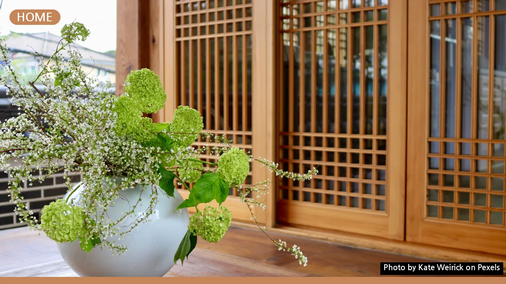
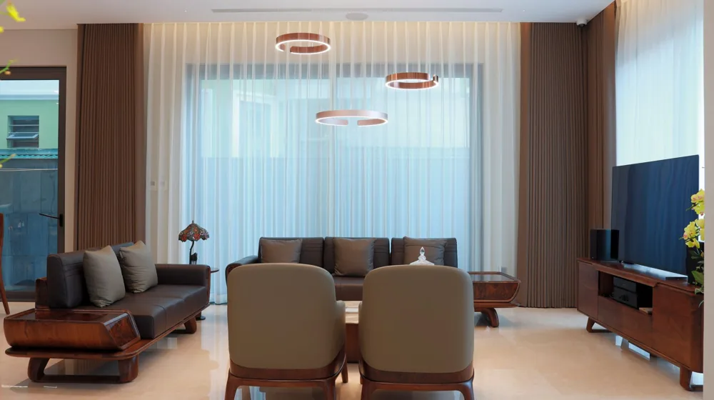

소반을 커피테이블로: 좁은 공간도 넓게 쓰는 감성 인테리어 팁
사진: Kate Weirick / Pexels (무료 이미지, 출처 표기)
소반, 왜 커피테이블로 활용하면 좋을까요?

소파 앞에 놓는 커피테이블은 거실 공간의 중심이 됩니다. 하지만 너무 크거나 흔한 디자인의 테이블은 오히려 공간을 답답하게 만들거나 개성을 잃게 할 수 있습니다. 이때 소반은 좋은 대안이 됩니다. 전통적인 미학을 현대적인 공간에 자연스럽게 녹여내면서, 독특한 분위기를 연출할 수 있기 때문입니다.
특히 소반은 이동이 편리하고 부피가 작아 좁은 공간에서도 활용도가 높습니다. 거실의 작은 사이드 테이블이나 침대 옆 협탁, 베란다의 티 테이블 등 다양한 용도로 유연하게 사용할 수 있어 실용적입니다. 흔한 가구 대신 소반을 선택하는 것만으로도 나만의 개성을 담은 인테리어를 완성할 수 있습니다.
우리 집에 맞는 소반 종류 고르기
소반은 그 종류가 매우 다양하여 어떤 소반을 선택하느냐에 따라 인테리어 분위기가 크게 달라집니다. 재료, 형태, 다리 모양 등에 따라 구분할 수 있습니다. 전통적인 나무 소반부터 현대적인 디자인이 가미된 소반까지 선택의 폭이 넓습니다.
자신의 집 인테리어 스타일과 소파 디자인, 그리고 주로 어떤 용도로 사용할지 고려하여 소반을 고르는 것이 중요합니다. 아래 표를 통해 주요 소반의 특징을 살펴보세요.
소반 커피테이블, 이렇게 배치하면 공간이 달라져요
소반을 커피테이블로 활용할 때는 주변 가구와의 조화와 공간의 특성을 고려해야 합니다. 단순히 소파 앞에 두는 것을 넘어, 공간에 맞는 전략적인 배치를 통해 더 넓고 기능적인 공간을 만들 수 있습니다.
- 거실 중앙 배치: 일반적인 커피테이블처럼 소파 앞에 두되, 소파 팔걸이 높이보다 낮거나 비슷한 소반을 선택해 안정감을 줍니다. 여백의 미를 살려 주변에 다른 큰 가구를 최소화하는 것이 좋습니다.
- 사이드 테이블 활용: 거실 소파의 한쪽 끝이나 1인용 암체어 옆에 배치하면 개성 있는 사이드 테이블이 됩니다. 책이나 찻잔을 놓는 용도로 사용하며 아늑한 독서 공간을 연출할 수 있습니다.
- 베란다/창가 배치: 창밖 풍경을 즐기며 차 한 잔을 마시는 공간으로 활용하기 좋습니다. 아담한 크기의 원형 소반은 좁은 베란다에도 부담 없이 놓을 수 있습니다.
- 바닥 좌식 공간: 러그나 방석과 함께 소반을 배치하면 편안한 좌식 공간을 만들 수 있습니다. 특히 한옥 스타일이나 동양적인 분위기를 선호하는 분들에게 적합합니다.
소반과 어울리는 소품 매치 노하우
소반 자체의 아름다움을 살리면서도 세련된 인테리어를 완성하려면 소품 매치가 중요합니다. 소반의 전통적인 느낌과 현대적인 소품의 조화를 통해 더욱 풍성한 공간을 만들 수 있습니다.
- 도자기/유리 화병: 소반 위에 작은 도자기 화병이나 투명한 유리 화병을 올려 계절 꽃이나 식물을 두면 생동감을 더할 수 있습니다. 소반의 색상과 대비되는 색상의 화병을 선택해 포인트를 주는 것도 좋습니다.
- 찻잔 세트: 소반은 본래 차를 마시는 용도로 많이 사용되었습니다. 유려한 곡선의 찻잔 세트나 모던한 디자인의 커피잔을 올려두면 실제 활용은 물론, 시각적으로도 아름다운 연출이 됩니다.
- 초/디퓨저: 은은한 향과 불빛을 더하는 초나 디퓨저는 공간에 따뜻하고 아늑한 분위기를 선사합니다. 소반의 나무 재질과 어울리는 자연 소재의 용기를 선택하면 좋습니다.
- 책/잡지: 감각적인 표지의 책이나 잡지를 소반 위에 무심하게 놓아두면 편안하면서도 지적인 느낌을 줍니다. 독서를 즐기는 공간임을 표현하기에도 좋습니다.
소반 관리, 이것만은 꼭 알아두세요
오래도록 아름다운 소반을 사용하기 위해서는 올바른 관리가 필수적입니다. 소반은 대부분 나무로 만들어지므로, 나무의 특성을 이해하고 관리하는 것이 중요합니다.
- 직사광선 피하기: 강한 햇빛은 나무의 변색이나 갈라짐을 유발할 수 있습니다. 소반은 직사광선이 닿지 않는 곳에 두는 것이 좋습니다.
- 습도 조절: 너무 건조하거나 습한 환경은 나무에 좋지 않습니다. 적절한 실내 습도를 유지하는 것이 소반의 수명을 늘리는 데 도움이 됩니다.
- 정기적인 청소: 부드러운 천으로 먼지를 닦아내고, 오염 시에는 물에 적신 천을 꼭 짜서 빠르게 닦아낸 후 마른 천으로 물기를 제거해야 합니다.
- 오일/왁스 관리: 나무 소반은 주기적으로 가구용 오일이나 왁스를 발라주면 나무의 건조를 막고 윤기를 유지할 수 있습니다. 소반의 종류나 마감 방식에 따라 적합한 관리 제품을 사용해야 합니다. 2026년 08월 기준으로 시중에 다양한 천연 오일과 왁스가 판매되고 있으니, 소반의 재질에 맞는 제품을 선택하는 것이 좋습니다.
소반 인테리어, 자주 묻는 질문
Q1: 소반은 현대적인 인테리어와 어울릴까요?
A1: 네, 충분히 어울립니다. 소반은 미니멀하고 절제된 디자인 덕분에 모던, 북유럽, 심지어 인더스트리얼 인테리어에도 예상치 못한 조화를 이룰 수 있습니다. 특히 간결한 선과 자연스러운 나무 질감은 어떤 공간에도 따뜻하고 유니크한 포인트를 더해줍니다.
Q2: 소반 위에 뜨거운 냄비나 컵을 놓아도 되나요?
A2: 소반의 재질과 마감 방식에 따라 다르지만, 일반적으로는 뜨거운 물건을 직접 올려놓는 것을 피하는 것이 좋습니다. 나무 표면이 손상되거나 변색될 수 있습니다. 냄비 받침이나 컵받침을 사용하는 것이 소반을 오래 보호하는 현명한 방법입니다.
Q3: 소반 높이가 너무 낮아서 불편하지는 않을까요?
A3: 소반은 일반적인 커피테이블보다 높이가 낮은 경우가 많습니다. 이는 좌식 공간이나 낮은 소파와 함께 사용할 때 장점이 됩니다. 만약 일반적인 소파와 함께 사용할 예정이라면, 소파의 좌판 높이와 팔걸이 높이를 고려하여 적절한 높이의 소반을 선택하는 것이 좋습니다. 필요에 따라 여러 개의 소반을 겹쳐 사용하거나, 높이 조절 가능한 소반을 찾아보는 것도 방법입니다.
🔗 이 글도 함께 보면 좋아요: 원룸 인테리어, 예산 50만원부터 200만원까지 현실 가이드
관련 추천 상품
소반 커피테이블, 미니 소반, 전통 소반 관련 인기 상품 보러가기
이 포스팅은 쿠팡 파트너스 활동의 일환으로, 이에 따른 일정액의 수수료를 제공받습니다.